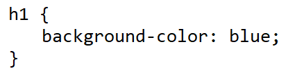
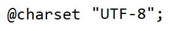

Javascript
Javascript is a dynamic and purely object-oriented programming language primarily used for the development of a website.
Version History
- CSS Level 1: Dec 1996
- CSS Level 2: May 1998
- CSS Level 2.1, (aka 2 Revision 1): June 2011
- CSS Saga - 1994 Hakon
- CSS Level 3 - Modular approach to CSS Development as opposed to the monolithic specification of CSS 2.1
HTML Stylesheets
Author styles
- Extended (aka linked) stylesheets (recommended)
- Embedded (aka internal)
- Inline styles
User Styles
- non-standard
- Some browsers provide (non standard) alterations through plug extensions
- stylish
User Agent Styles
- has its own rendering
- Sample default user agent stylesheet from CSS 2.1
CSS Statements
A building block that starts with any non-space characters and
ends at the first closing brace or semi-colon.
- CSS Rule Set - the one that is usually used.

- At-rules - instructions for css on how to perform or behave. It begins with the charcter @.

CSS Selector
CSS selector are series of selectors separated by combinators that allows styling of either a part of the document or the whole.
Simple Selectors
- May begin with a universal selector (*) which is not necessarily typed or a type selector.
- Cannot contain other type selectors or universal selector.